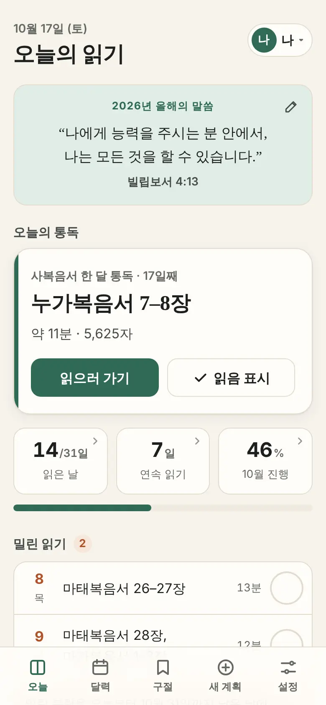
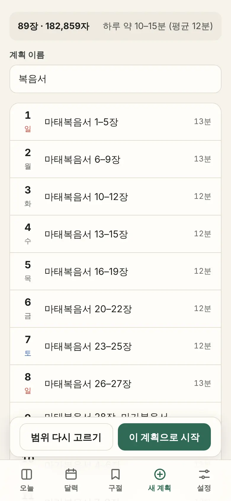
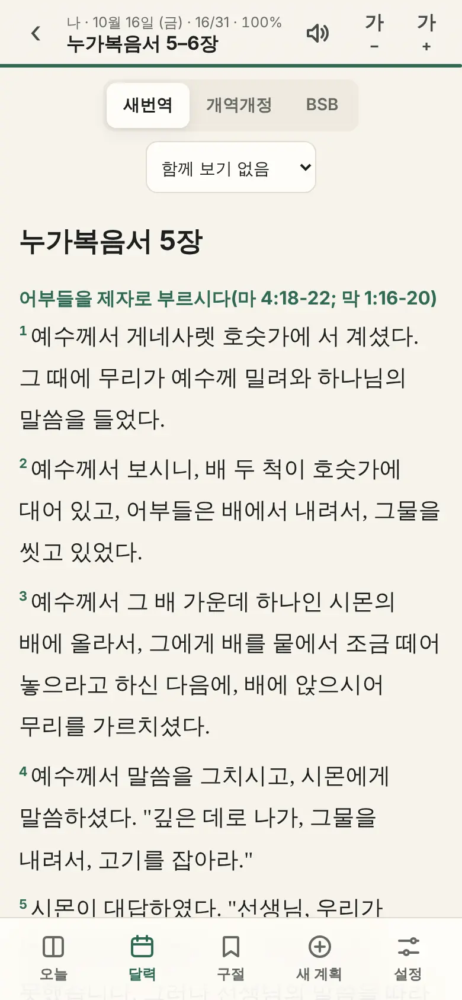
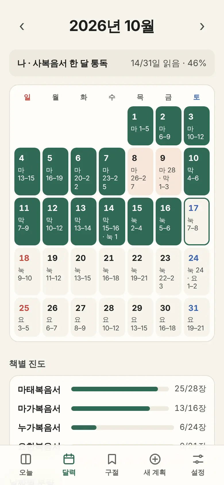
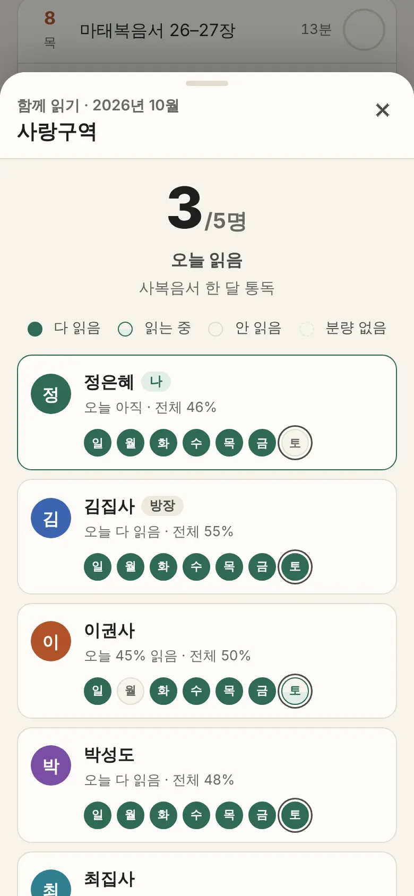
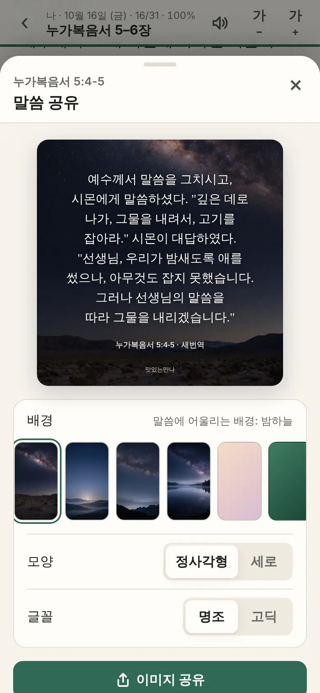

계정 여러 개
한 휴대폰이나 태블릿에서 가족이 계정을 나눠 각자의 계획과 기록을 씁니다.
성경 통독 앱 · 무료 · 회원가입 없음
읽고 싶은 범위와 기간만 고르면, 맛있는만나가 날마다 읽을 분량을 고르게 나누어 드립니다. 책과 장, 단락이 끝나는 자연스러운 곳에서 끊으니 오늘 몫만 펴서 읽고 표시하면 됩니다.
설치하지 않아도 휴대폰·태블릿·컴퓨터 브라우저에서 바로 열립니다.

“백성이 날마다 나가서, 그날 그날 먹을 만큼 거두어들이게 하여라.”출애굽기 16:4
“주님의 말씀의 맛이 내게 어찌 그리도 단지요? 내 입에는 꿀보다 더 답니다.”시편 119:103
광야의 이스라엘이 날마다 그날 먹을 만나를 거두었듯이, 날마다 그날 몫의 말씀을 꿀보다 단 그 맛으로 누리도록. 그래서 이름이 맛있는만나입니다.
고르게 나누기
통독표를 장 수로만 나누면 짧은 장이 모인 날과 긴 장이 모인 날의 차이가 큽니다. 맛있는만나는 장마다 글자 수를 세어 하루 분량을 고르게 맞추고, 그 안에서 책·장·단락이 끝나는 곳을 골라 끊습니다.
성경 전체를 1년(365일)에 읽을 때 날마다 읽는 시간
1분에 500자(띄어쓰기 뺀 글자)를 읽는다고 보고 셌습니다
그래프를 누르거나 마우스를 올리면 그날 읽는 곳이 보입니다.
| 나누는 방식 | 가장 짧은 날 | 평균 | 가장 긴 날 | 대부분의 날 (10–90%) |
|---|---|---|---|---|
| 장 수로 똑같이 | 1.4분 | 9.3분 | 21.5분 | 4.7–14.5분 |
| 맛있는만나 | 7.0분 | 9.3분 | 12.5분 | 8.1–10.5분 |
계획 만들기
시작하기 전에 날짜별 분량과 하루 몇 분인지 미리 보고, 계획 이름을 정해 시작합니다.

읽기

이어 가기

함께 읽기
방을 만들고 초대 링크를 보내면 됩니다. 오늘 누가 읽었는지 “오늘 5명 중 3명 읽음”처럼 보여서 서로 격려하며 이어 갑니다.

간직하고 나누기

어디서나
한 휴대폰이나 태블릿에서 가족이 계정을 나눠 각자의 계획과 기록을 씁니다.
로그인 없이 동기화 코드(또는 QR 코드) 하나로 휴대폰·태블릿·컴퓨터의 기록을 맞춥니다.
한 번 연 책은 인터넷 없이 열리고, 성경 전체를 미리 저장해 둘 수도 있습니다.
회원가입 없이 기록은 이 기기에 저장됩니다. 동기화를 켤 때만 서버에 보관하고, 언제든 파일로 백업할 수 있습니다.
설치
앱 장터를 거치지 않습니다. 맛있는만나를 연 다음 홈 화면에 추가하면 아이콘을 눌러 바로 엽니다.
아이폰에서는 홈 화면에 추가한 앱에서 읽기 알림을 켤 수 있습니다. 카카오톡 같은 앱 안에서 링크를 열면 휴대폰 브라우저로 옮겨 엽니다 (그래야 기록이 한곳에 모입니다).
자주 묻는 질문
네. 회원가입이나 결제 없이 모든 기능을 쓸 수 있고 광고도 없습니다.
쓰고 있는 기기의 브라우저 안에 저장됩니다. 기기 간 동기화를 켜면 동기화 서버에도 보관되어 다른 기기와 맞춰집니다. 설정에서 언제든 백업 파일로 내보낼 수 있습니다.
설정의 기기 간 동기화에서 코드로 연결하거나, 기록 백업 파일을 내보내 새 기기에서 가져오면 됩니다.
네. 기간은 하루부터 366일까지 정할 수 있습니다. 성경 전체를 1년에 읽으면 하루 평균 9분 남짓입니다.
아니요. 오늘 화면에서 ‘남은 기간에 다시 나누기’를 누르면 밀린 분량을 오늘부터 남은 날에 고르게 다시 나눕니다. 이미 읽은 날은 그대로 둡니다.
분량은 새번역을 기준으로 나누고, 본문은 새번역·개역개정·BSB(영어)로 읽을 수 있습니다.
한 번 연 책은 인터넷 없이도 열립니다. 설정에서 성경 전체를 미리 저장해 두면 어디서나 읽을 수 있습니다.
범위와 기간을 고르는 데 1분이면 충분합니다.